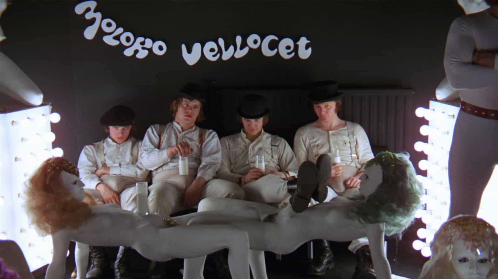
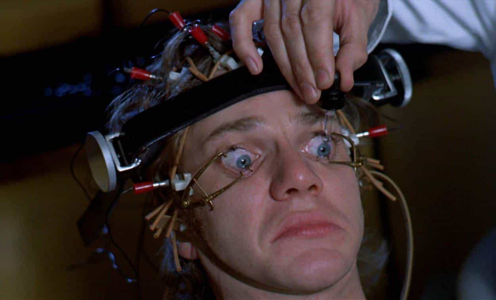
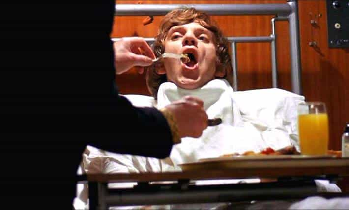

I'm Ted, I read old books, and my interest in Stanley Kubrick has nothing, absolutely nothing, to do with my interest in conspiracy theories, not at all, no way. And I like my privacy.


It’s a tough competition for which classic novel (or film) best predicted a future which maps closest to our own. Was it 1984, with governments inventing endless fake wars and spreading its propaganda against fake enemies? Was it Brave New World, with the population on drugs to make them so happy they become complacent to the evil around them? Despite such eerily accurate competition, one strong contender is Anthony Burgess’ A Clockwork Orange and in particular, Stanley Kubrick’s 1971 adaptation of it.
But the importance of reading the book (or seeing the movie) isn’t just to see how uncannily someone predicted the future; rather, because of the many lessons that the book has for both the alpha male, and for the aspiring alpha male, since it is the story of a deeply alpha—albeit immoral—man. The movie is, indeed, the opposite of Kubrick’s warning for what alpha males should not do, Lolita.
Before we discuss the nine key lessons of A Clockwork Orange, we need to remind ourselves that the alpha male protagonist of the book and film is immoral, committing many terrible, illegal acts like brutal murder. We at Return of Kings strongly condemn all such immorality and law-breaking. We can learn from the best of the protagonist, not the worst. It’s like learning from Bill Clinton: we may object to his immoral corruption and possible murders of those who got in his way like Vince Foster; but we can still learn from his ability to excite women around him.
Lets go backwards in the film, since the overarching lesson is at the very end of the film: the alpha male wins. Alex DeLarge, the protagonist acts in the most evil ways imaginable and yet… ends up with the Prime Minister literally spoon-feeding him everything he wants. You don’t need to be evil; but to win, you need to be alpha.

Society was rightfully discouraging “ultraviolence” but he and his goons let their lives revolve around their “ultraviolent” ways. Alpha males must reject the expectations of society and find their own path—although, of course, in less evil ways than Alex did. As Joseph Campbell said, “If the path before you is clear, you’re probably on someone else’s.”
The government subjected Alex to violent movies in the famous scene in which his eyes are forced open to watch them while constantly receiving eye drops. That worked until Alex tried to kill himself… which broke the spell, and let him return to his violent, alpha ways. This is a key non-obvious lesson of the book and film, and one of the central ingredients to Trump’s rise: the more the MSM tried to stop him, the more powerful he became.
At this point, I humbly tip my hat to my tribe’s fearless leader-spokesman, Roosh. He is carving out his own path, and society’s attempts to stop him have only made his influence grow.
You can’t avoid society’s influence on you, so you have to acknowledge the influence in order to temper it. It’s key to the plot that not only are Alex and his gang sexually-charged (they wear huge penises on their outfits), but from the first moment of the film, the movie paints the entire society around them as being over-the-top sexual.
Literally, from the first moment: the movie opens with Alex and his gang in a “milk bar,” in which the tables are sculptures of naked women, and the exercise instructor whom Alex rapes has a statue of a huge penis and her walls are covered in penis-art. The message is clear: dangerously over-sexualized society leads to dangerously over-sexualized individuals.
Alex’s deeply beta parents never had the strength to stop him from going down his violent path. The alpha parent role model and discipliner would have pushed Alex into a healthier direction.

Intellectuals pretend to support you, so long as it costs them nothing… but the moment they have to apply their ideas to themselves, suddenly, they change their minds. Alex, a criminal and a victim of the government’s brainwashing, falls into a pro-criminal-rights intellectual’s house, and the intellectual pledges to help Alex fight the government. But the moment the intellectual realizes that Alex had, years earlier, raped his wife… he will no longer apply his belief in helping criminals to Alex, becoming a hypocrite. (Not to mention, the accurate mockery of intellectuals wanting to help the very class of people who are raping their wives.)
Alex’s past problems keep on coming back to haunt him. He once beat up an old man for no reason—and when he stumbles upon the old man years later, the old man beats him up. Alex pushes the members of his gang too far and years later, when they are policemen, they beat him up.
How did the intellectual realize that this oppressed boy he took in had, years earlier, raped his wife? Because while showering, Alex hummed Singing in the Rain, the same tune he hummed while raping the intellectual’s wife. Lesson: the devil is in the details and, in particular, small details gone wrong make the best-laid plays go awry.

While the adults and representatives of society in the film all speak in standard English, Alex and his goons only speak in a Jabberwocky-esque English-like language. While reading about droogs and devotchkas makes no sense out of context, it is understandable in-context. Selfdictioning is empowerificating, an observation which our friend Chateau Heartiste has amply proven with his amplious wordcreations.
Despite his brutish, immoral, and illegal ways, Alex maintains a passion, even an obsession, with Beethoven, whom he calls “Ludwig Van.” Without a deep passion, you’re just another plebeian. Just an ounce of high culture makes you different from the rest.
Beyond lessons for alpha males, one of the least obvious—and most important—meta lessons from this book and film is that morality is complex. When you’re a kid, and you have to read this novel in class, or study the Bible (as I did in my childhood religious school), you are taught that they are simple morality tales of good vs bad. “In this novel and film, Alex is bad, the Intellectual writer good. In the Old Testament, Jacob is good, but Pharaoh is bad.”
But as we get older, with more depth of experience with human nature and the world, we are able to see that everyone is good and bad. And that one of the key elements of timeless literature is to capture this nuance.
In the Old Testament, Jacob is one of the the great heroes, yet he steals his brother’s inheritance. Very good people often have bad sides, and very bad people often have good sides. One of the key challenges of adulthood is separately out what is ultimately good from what is ultimately bad. It is this challenge, this very complex nature of morality within our very human lives, that prevents most men from rising above the masses and turning themselves into better men.
Much more about conspiracy theories and protecting your privacy.
Read More: 8 Important Lessons From The Classic Novel Lolita